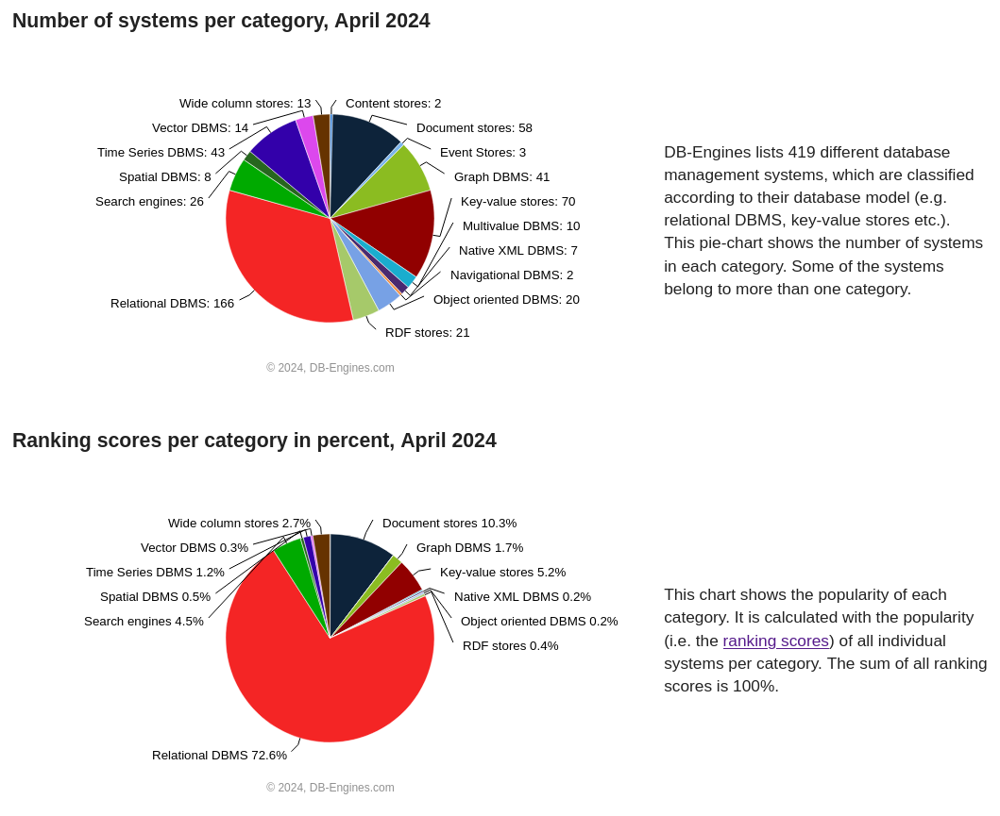
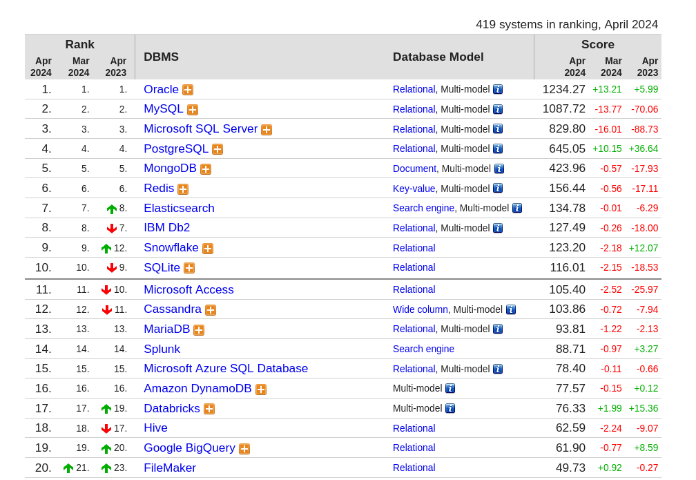
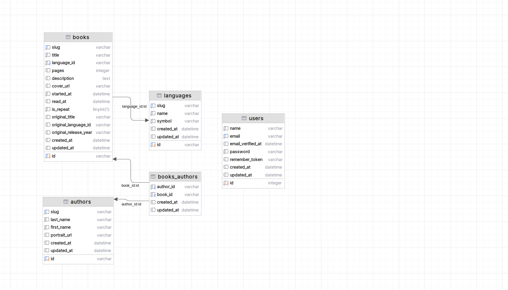
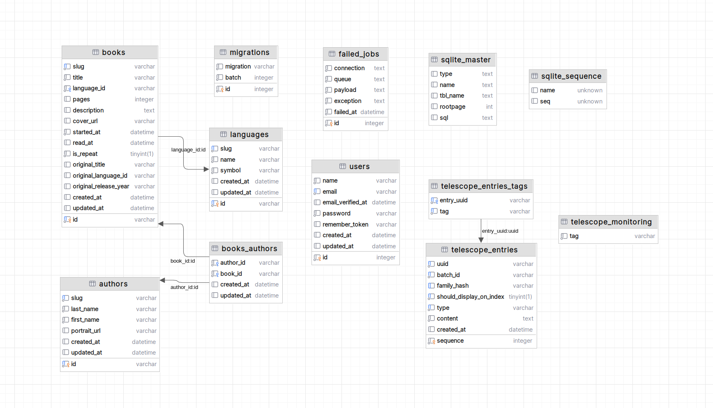
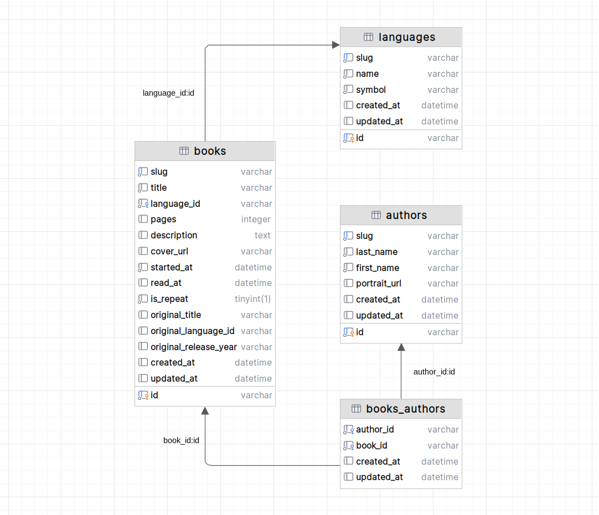
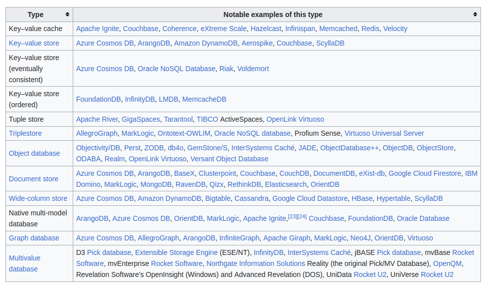

Internetowe bazy danych
Projektowanie i programowanie systemów internetowych I
wykład 8 z 15

mgr inż. Krzysztof Rewak
Zakład Informatyki, Wydział Nauk Technicznych i Ekonomicznych
Collegium Witelona Uczelnia Państwowa
Blumilk sp. z o.o.
Agenda
- Proste typy baz danych
- Relacyjne bazy danych
- Obiektowe bazy danych
- Nierelacyjne bazy danych
- Podsumowanie
Definicja
Nie ma oczywiście żadnej konkretnej definicji czym mogłaby być baza danych.
Wikipedia opisuje bazy danych jako "zbiór danych zapisanych zgodnie z określonymi regułami"... ale także jako "dane cyfrowe gromadzone zgodnie z zasadami przyjętymi dla danego programu komputerowego specjalizowanego w gromadzeniu i przetwarzaniu tych danych".
System zarządzania bazą danych
Warto znać w tym kontekście pojęcie SZBD (ang. Database Management System, DBMS), ponieważ należy rozróżniać samą bazę danych od pewnej warstwy abstrakcji, które pozwala nam na dostęp do tejże bazy i jejże danych.
W świecie projektowania i wdrażania systemów internetowych najczęściej te pojęcia są tożsame, ale należy rozumieć to jako ogólnie przyjęty skrót myślowy.
Ale zanim przejdziemy do baz i systemów uważanych za najpopularniejsze, musimy zrozumieć, że idea bazy danych nie zawsze wiąże się z SQL-em i zaawansowanym operacjami.
Kartotekowe bazy danych
Kartoteka to najprostsza baza danych złożona z jednej tablicy, którą można przedstawić jako tabelę z wierszami i kolumnami.
| Tytuł | Autor | Data przeczytania |
|---|---|---|
| Operacja Mir | Remigiusz Mróz | 2024-04-20 |
| Odwet | Krystian Maniecki | 2024-04-19 |
| 21 lekcji na XXI wiek | Yuval Noah Harari | 2024-04-19 |
| Preludium Fundacji | Isaac Asimov | 2024-04-10 |
| Wybór | Anne Applebaum | 2024-03-27 |
| Pan Mercedes | Stephen King | 2024-03-21 |
| Piękna krew | Lucius Shepard | 2024-03-06 |
| Komandosi Republiki. Rozkaz 66 | Karen Traviss | 2024-03-05 |
| Lot 202 | Remigiusz Mróz | 2024-03-04 |
| Czy da się to przyspieszyć? | Jeremy Clarkson | 2024-03-03 |
przykładowa kartoteka z listą ostatnio przeczytanych przeze mnie książek
Zalety kartotek
- proste do odczytu - można otworzyć nawet w Notatniku
- proste do zapisu - jak powyżej
- dane można łatwo zapisać w innych formatach takich jak CSV, XML czy JSON
- dane można sortować i filtrować - tutaj będzie to zależało od ich struktury
Proste formaty danych
Tytuł,Autor,Data przeczytania
Operacja Mir,Remigiusz Mróz,2024-04-20
Odwet,Krystian Maniecki,2024-04-19
21 lekcji na XXI wiek,Yuval Noah Harari,2024-04-19
<?xml version="1.0" ?>
<ksiazki>
<ksiazka>
<Tytul>Operacja Mir</Tytul>
<Autor>Remigiusz Mróz</Autor>
<DataPrzeczytania>2024-04-20</DataPrzeczytania>
</ksiazka>
<ksiazka>
<Tytul>Odwet</Tytul>
<Autor>Krystian Maniecki</Autor>
<DataPrzeczytania>2024-04-19</DataPrzeczytania>
</ksiazka>
<ksiazka>
<Tytul>21 lekcji na XXI wiek</Tytul>
<Autor>Yuval Noah Harari</Autor>
<DataPrzeczytania>2024-04-19</DataPrzeczytania>
</ksiazka>
</ksiazki>
[
{
"Tytuł": "Operacja Mir",
"Autor": "Remigiusz Mróz",
"Data przeczytania": "2024-04-20"
},
{
"Tytuł": "Odwet",
"Autor": "Krystian Maniecki",
"Data przeczytania": "2024-04-19"
},
{
"Tytuł": "21 lekcji na XXI wiek",
"Autor": "Yuval Noah Harari",
"Data przeczytania": "2024-04-19"
}
]
Wady kartotek
- niedostosowane do trudniejszych danych
- sortowanie i filtrowanie może być czasochłonne
- to tylko pliki, więc są bardzo podatne na błędy
Inne typy baz danych pomagają rozwiązać część z tych problemów. Natomiast w systemach internetowych tak naprawdę będą się liczyły dwa główne typy: bazy relacyjne i nierelacyjne.

najpopularniejsze typy baz danych wedle db-engines.com

najpopularniejsze bazy danych wedle db-engines.com
Cała idea relacyjnych baz danych na pewno została szczegółowo przedstawiona na przedmiotach Bazy danych i Projektowanie systemów baz danych.
Dziś omówimy jedynie zagadnienia istotne z perspektywy systemów internetowych, a już konkretyzując: wykorzystywanie w pełni relacyjności, migracje i seedowanie oraz kwestię ACID.

schemat relacyjnej bazy danych

schemat relacyjnej bazy danych (tak na serio)
Relacyjność i koherentność
To, że DBMS nazywa się relacyjnym, nie oznacza, że wszystko zrobione w jego ramach będzie miało poprawnie zbudowane relacje. Nie będzie też oznaczało, że dane wewnątrz mają jakiś sens strukturalny.
Pomyślcie o tym jak o obiektowym paradygmacie w C++, Pythonie czy PHP. Jeżeli ktoś się uprze, jest w stanie programować wszystko strukturalnie w tych trzech językach. Jeżeli nazwie zmienną
String myFavouriteNumber to nic nam do tego, że to nie jest tak naprawdę liczba. Z bazami danych jest niestety podobnie.
Klucze!
Żeby zachować sensowną relacyjność i koherentność należy odpowiednio korzystać z funkcjonalności jakie dają nam klucze w relacyjnych bazach danych.
Przede wszystkim klucze
PRIMARY czy UNIQUE pomogą przy zachowaniu spójności danych. Lepiej aby takie rzeczy sprawdzała sama baza, a nie jej klient.
Klucze
FOREIGN zachowają koherencję między tabelami. Nikt już nigdy nie podłączy się do nieistniejącego rekordu, ale warto znać też klauzulę ON DELETE, która pomaga w zarządzaniu tym, co ma się stać po skasowaniu połączonego rekordu.

schemat relacyjnej bazy danych z relacjami
Automatyzacja budowania bazy
Czasy, w których do projektu dodawany był plik
baza.sql z dumpem produkcyjnej bazy danych, na szczęście odchodzą do lamusa.
Rozwiązaniem obecnie uważanym za standard branżowym są tzw. migracje, które dodaje się do repozytorium, a które są skryptami automatyzującymi tworzenie nowej bazy od zera.
Migracje
Różne frameworki mają różne podejścia, ale idea jest wspólna. W wybranym katalogu repozytorium dodawane są nowe pliki (koniecznie w konkretnej kolejności!), które opisują wszystkie zmiany, które progamista zaplanował w ramach swojej pracy nad systemem.
Dzięki temu wszyscy inżynierowie pracujący nad systemem będą mogli łatwo ujednolicić swoje środowiska deweloperskie, często nawet bez potrzeby utraty swoich danych.
Różnice mogą pojawiać się na poziomie tworzenia migracji. Niektóre frameworki (np. Laravel) zachęcają do ręcznego tworzenia migracji, co jest bardziej czasochłonne, ale jednocześnie łatwiejsze w customizacji. Inne (np. Django) posiadają mechanizmy do automatycznego tworzenia plików migracyjnych budowanych na podstawie zmian w plikach modelu.
return new class() extends Migration
{
public function up(): void
{
Schema::create(
"books",
function (Blueprint $table): void {
$table->uuid("id")->primary();
$table->string("slug", 100)->unique();
$table->string("title", 100);
$table->string("language_id", 36);
$table->foreign("language_id")->references("id")->on("languages");
$table->integer("pages")->nullable()->default(null);
$table->text("description")->nullable()->default(null);
$table->string("cover_url", 100)->nullable()->default(null);
$table->timestamp("started_at")->useCurrent();
$table->timestamp("read_at")->nullable()->default(null);
$table->boolean("is_repeat")->default(false);
$table->string("original_title", 100)->nullable()->default(null);
$table->string("original_language_id", 100)->nullable()->default(null);
$table->string("original_release_year", 100)->nullable()->default(null);
$table->timestamps();
},
);
}
public function down(): void
{
Schema::dropIfExists("books");
}
};
migracja w Laravelu
Warto odnotować, że większość frameworków pozwala na pełne zarządzanie migracjami. W dowolnym momencie można uruchomić nowe, cofnąć się do konkretnego miejsca w przeszłości czy też zobaczyć, co jeszcze nie zostało zaaplikowane.
Dobrą praktyką jest prowadzenie projektu w taki sposób, aby nie zmuszać nikogo nigdzie do resetu bazy danych. Stąd też zazwyczaj nie zaleca się modyfikowania już przesłanych migracji.
Seedowanie
Za grzeczność uważa się przygotowanie tzw. seederów, czyli gotowych lub pseudogotowych zestawów danych, które można na przykład uruchomić podczas inicjalizacji projektu w środowisku deweloperskim. Mogą się tam znaleźć takie rzeczy jak konta użytkowników z gotowymi ustawionymi hasłami czy wygenerowane w losowy sposób 100 produktów i 1000 zamówień w sklepie internetowym.
Część danych wręcz koniecznie trzeba zaseedować. Takie rzeczy jak państwa świata, waluty czy języki oczywiście można też wystawić w jakimś CRUD-zie. Ale co z rolami systemowymi albo uprawnieniami?
Transakcje
Transakcje to często pomijany przez początkujących programistów mechanizm, który zdecydowanie warto znać.
W bardzo dużym uproszczeniu jest to sposób wymuszenia na systemie zarządzania bazą danych działania atomowego w kontekście transakcji. Jeżeli w jednej transakcji zamknięte zostaną cztery operacje, wszystkie będą musiały się faktycznie wykonać, żeby uznać całość za wykonaną - ze wszystkimi tego konsekwencjami.
ACID
ACID to akronom zbierający cechy gwarantujące poprawne przetwarzanie transakcji w relacyjnych bazach danych:
- atomicity, niepodzielność akcji w transkacji
- consistency, spójność poprzez wymuszenie zasad integralności
- isolation, izolacja procesów wykonujących transakcje
- durability, trwałość w przypadku awarii
Idea
O ileż prościej byłoby móc programować na przykład tak:
Book book = new Book("Zdrajca", original: "Traitor")
book.addAuthor(new Author("Matthew", "Stover", Country.USA))
book.setPages(320)
book.save()Obiektowe bazy danych
W taki sposób działają właśnie obiektowe bazy danych, np. db4o.
Niestety są ekstremalnie niepopularne, ociężałe i powolne oraz na stałe przytwierdzone do swoich technologii, przez co nigdy się nie przebiły do mainstreamu. Zagadnienie jest ciekawe i jego najważniejsze założenia realizowane są obecnie częściej przez systemy mapujące relacje na obiekty (ORM), ale tamże wykorzystywane są klasyczne relacyjne bazy danych.
NoSQL
Relacyjne bazy danych przez lata królowały właściwie we wszystkich systemach informatycznych. W którymś momencie zaczęto jednak zauważać, że niektóre sposoby ich wykorzystania były tzw. overengineeringiem lub były trudne w utrzymaniu lub skalowaniu.
Czy musimy logi systemowe trzymać w klasycznej bazie danych? A cache produktów w sklepie internetowym? A podpowiedzi do wyszukiwarki internetowej?
A może i produkty w tymże sklepie też jednak lepiej trzymać poza klasyczną tablicą z relacyjnej bazy?
Istnieje kilka różnych sposobów na opisanie nosqlowych baz danych. Najprawdopodbniej najlepiej zapoznać się przynajmniej z bazami key-value, dokumentowymi i grafowymi.

klasyfikacja wedle Wikipedii; zwróćcie uwagę na powtórzenia w kolumnie z przykładami
Idea jest jednak wszędzie wspólna: porzucić relacje na rzecz bardziej elastycznego podejścia. Może to zwiększyć zapotrzebowanie na pamięć, może być wolniejsze. Ale nie trzeba będzie trzymać się sztywnych reguł tabelarycznego podejścia.
Bazy klucz-wartość
Bazy typu key-value, czyli klucz-wartość to pewnego rodzaju pochodna od prostych kartotek. Wszystkie dane trzymane są pod konkretnymi kluczami, a więc dostęp do pojedynczego rekordu jest bardzo szybki, ale niestety kosztem przeszukiwania bazy.
books:20758dc6-f296-4af2-a66b-7d3ff76ac49b:title => Operacja Mir
books:20758dc6-f296-4af2-a66b-7d3ff76ac49b:author => Remigiusz Mróz
books:20758dc6-f296-4af2-a66b-7d3ff76ac49b:readAt => 2024-04-20
books:074a507a-6d8d-4707-ad78-497ef354f05b:title => Odwet
books:074a507a-6d8d-4707-ad78-497ef354f05b:author => Krystian Maniecki
books:074a507a-6d8d-4707-ad78-497ef354f05b:readAt => 2024-04-19
books:fbf856be-b157-48c0-8a58-4e4ae25edde2:title => 21 lekcji na XXI wiek
books:fbf856be-b157-48c0-8a58-4e4ae25edde2:author => Yuval Noah Harari
books:fbf856be-b157-48c0-8a58-4e4ae25edde2:readAt => 2024-04-19
przykładowy zapis w Redisie
Bazy dokumentowe
Bazy typu dokumentowego to platformy, które są zoptymalizowane do przetwarzania dokumentów w rozumieniu plików w formacie JSON lub XML. Schemat dokumentu jest najczęściej opcjonalny, dzięki czemu dane mogą przybierać najróżniejsze postaci.
[
{
id: "20758dc6-f296-4af2-a66b-7d3ff76ac49b",
title: "Operacja Mir",
author: {
id: "75ff22b3-b94f-41e3-837b-f73092014809",
name: "Remigiusz Mróz"
},
readAt: "2024-04-20"
},
{
id: "074a507a-6d8d-4707-ad78-497ef354f05b",
title: "Odwet",
author: {
id: "1fa8d3e6-ecb3-4806-b2e5-b4f2c589dae5",
name: "Krystian Maniecki"
},
readAt: "2024-04-19"
},
{
id: "fbf856be-b157-48c0-8a58-4e4ae25edde2",
title: "21 lekcji na XXI wiek",
author: {
id: "573aedb6-ba01-404a-b0f5-c865813d73e7",
name: "Yuval Noah Harari"
},
readAt: "2024-04-19"
}
}
przykładowy zapis w MongoDB
Bazy grafowe
Bazy typu grafowego zoptymalizowane są pod względem szukania najkrótszych (lub sprawdzania istniejących) ścieżek między dwoma zadanymi wierzchołkami. Przydatne wszędzie tam, gdzie chcemy znajdować zależności, wzorce i powiązania - w social mediach, bankowości elektronicznej, robotyce czy szeroko rozumianej nauce.
Highlights
- dobry programista systemów internetowych zna przynajmniej kilka typów baz danych i potrafi dobrać narzędzie do potrzeb (czyli nie poddaje się łatwo hype-driven developmentowi)
- bazy kartotekowe spotkamy wszędzie: przy plikach do importu, przy raportach, przy integracjach z systemami starszego typu
- bazy relacyjne to podstawa i warto opanować przynajmniej jedną (i wiedzieć, że niektóre technologie mają swoje preferowane systemy)
- bazy obiektowe to upadły eksperyment, ale zainspirowały twórców technologii ORM
- bazy NoSQL mają swoje zastosowania, ale warto trzy razy zastanowić się czy używamy dobrego systemu do konkretnego problemu; tutaj nie ma szwajcarskich scyzoryków
Źródła i do dalszego poczytania
- Baza danych na Wikipedii
- ranking baz danych na db-engines.com
- typy noSQL-owych baz danych, znów na Wikipedii